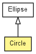

toxi.geom
Class Circle
java.lang.Object
 toxi.geom.Vec2D
toxi.geom.Ellipse
toxi.geom.Circle
toxi.geom.Vec2D
toxi.geom.Ellipse
toxi.geom.Circle
- All Implemented Interfaces:
- java.lang.Comparable<ReadonlyVec2D>, ReadonlyVec2D, Shape2D
public class Circle
- extends Ellipse

This class overrides Ellipse to define a 2D circle and provides
several utility methods for it, including factory methods to construct
circles from points.
| Methods inherited from class toxi.geom.Vec2D |
abs, add, add, add, addSelf, addSelf, angleBetween, angleBetween, bisect, clear, compareTo, constrain, constrain, copy, cross, distanceTo, distanceToSquared, dot, equals, equalsWithTolerance, floor, frac, fromTheta, getAbs, getComponent, getComponent, getConstrained, getFloored, getFrac, getInverted, getLimited, getNormalized, getNormalizedTo, getPerpendicular, getReciprocal, getReflected, getRotated, getSignum, hashCode, heading, interpolateTo, interpolateTo, interpolateTo, interpolateTo, interpolateToSelf, interpolateToSelf, invert, isInCircle, isInRectangle, isInTriangle, isMajorAxis, isZeroVector, jitter, jitter, jitter, jitter, jitter, jitter, limit, magnitude, magSquared, max, max, maxSelf, min, min, minSelf, normalize, normalizeTo, perpendicular, randomVector, randomVector, reciprocal, reflect, rotate, roundToAxis, scale, scale, scale, scale, scaleSelf, scaleSelf, scaleSelf, set, set, set, setComponent, setComponent, signum, sub, sub, sub, subSelf, subSelf, tangentNormalOfEllipse, to3DXY, to3DXZ, to3DYZ, toArray, toCartesian, toPolar, toString, x, y |
| Methods inherited from class java.lang.Object |
getClass, notify, notifyAll, wait, wait, wait |
Circle
public Circle()
Circle
public Circle(Circle c)
Circle
public Circle(float radius)
Circle
public Circle(float x,
float y,
float radius)
Circle
public Circle(ReadonlyVec2D origin,
float radius)
from2Points
public static Circle from2Points(Vec2D p1,
Vec2D p2)
- Factory method to construct a circle which has the two given points lying
on its perimeter. If the points are coincident, the circle will have a
radius of zero.
- Parameters:
p1 - p2 -
- Returns:
- new circle instance
from3Points
public static Circle from3Points(Vec2D p1,
Vec2D p2,
Vec2D p3)
- Factory method to construct a circle which has the three given points
lying on its perimeter. The function returns null, if the 3 points are
co-linear (in which case it's impossible to find a circle).
Based on CPP code by Paul Bourke:
http://local.wasp.uwa.edu.au/~pbourke/geometry/circlefrom3/
- Parameters:
p1 - p2 - p3 -
- Returns:
- new circle instance or null
containsPoint
public boolean containsPoint(ReadonlyVec2D p)
- Description copied from interface:
Shape2D
- Checks if the point is within the given shape.
- Specified by:
containsPoint in interface Shape2D- Overrides:
containsPoint in class Ellipse
- Returns:
- true, if inside
getCircumference
public float getCircumference()
- Description copied from class:
Ellipse
- Computes the approximate circumference of the ellipse, using this
equation:
2 * PI * sqrt(1/2 * (rx*rx+ry*ry)).
The precise value is an infinite series elliptical integral, but the
approximation comes sufficiently close. See Wikipedia for more details:
http://en.wikipedia.org/wiki/Ellipse
- Specified by:
getCircumference in interface Shape2D- Overrides:
getCircumference in class Ellipse
- Returns:
- circumference
getRadius
public float getRadius()
getTangentPoints
public Vec2D[] getTangentPoints(ReadonlyVec2D p)
intersectsCircle
public Vec2D[] intersectsCircle(Circle c)
setRadius
public Circle setRadius(float r)